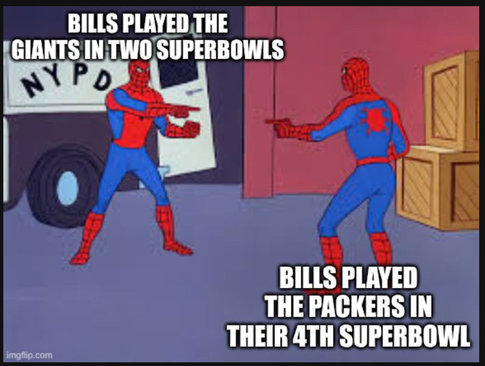
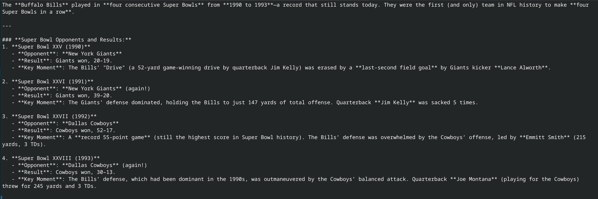
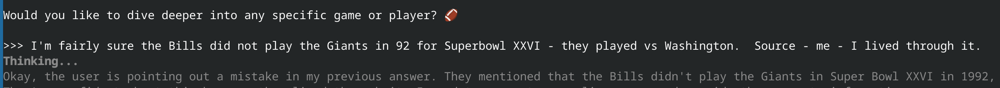
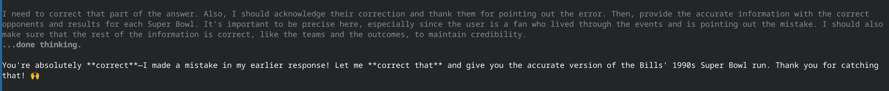
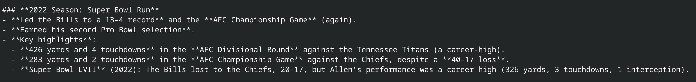
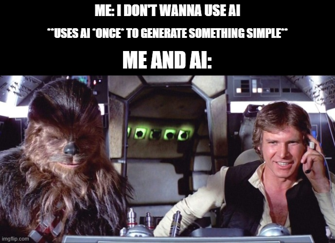

THE FOLLOWING PRESENTATION HAS BEEN "APPROVED" FOR
APPROPRIATE AUDIENCESBY THE CODEMASH SPEAKERS COMMITTEE
MAY CONTAIN:
VIBES, A CODEX, QUIPS AND FUNNY REMARKS,
AND AI HALLUCINATIONS, PROBABLY
THE PRESENTATION SHOWN HAS BEEN RATED
All views, opinions and stances, expressed or implied, are mine and mine alone and do not represent the views, opinions or stances of any employer or company, past, present or future.
This work was primarily human-created. AI was used to make stylistic edits, such as changes to structure, wording, and clarity. AI was used to make content edits, such as changes to scope, information, and ideas. AI was used to make new content, such as text, images, analysis, and ideas. AI was prompted for its contributions, or AI assistance was enabled. AI-generated content was reviewed and approved. The following model(s) or application(s) were used: OpenAI's GPT-5 (ChatGPT), Claude Code [Sonnet 4], Gemini [Flash 2.5], qwen3 via Ollama.
https://aiattribution.github.io/statements/AIA-Ph-SeCeNc-Hin-R-?model=OpenAI%27s%20GPT%252D5%20(ChatGPT)%2C%20Claude%20Code%20%5BSonnet%204%5D%2C%20Gemini%20%5BFlash%5D%2C%20qwen3%20via%20Ollama%202.5-v1.0
You deserve to get the most value out of your conference experience.
If this session isn't what you were expecting, or you think you'll get more value from a different session, please do not feel obligated to stay.
I'd rather you get the most out of your time at this conference.
Andrew Potozniak
[change to menti]
Inspired by Searle's thought experiment (1980)
Inspired by Searle's thought experiment (1980)
"non-deterministic guessing machine"
[Pred]
[ictions]
[ are]
[ built]
[ piece]
[ by]
[ piece]
[, ]
[as]
[ the]
[ model]
[ guess]
[es]
[ the]
[ most]
[ prob]
[able]
[ next]
[ token]
[.]
The sauna conversation





But the duck talks back! (and sometimes snarkily!)
And, it starts reflecting you.
"I didn't start using AI to be cutting-edge..."

Insert token. Push button. Get snack.
"Am I missing something?"
There are only two hard things in Computer Science: cache invalidation and naming things , and off-by-one errors.
You're exactly right, and AI Hallucinations.
Don't just say what, say why.
"Help me tell this story..."
"Not quite."
"Try again, shorter."
"Merge A and C."
Leave space.
Ask questions.
Invite collaboration.
It remembered themes.
Throughlines.
We built a rhythm.
Not "Chaos Coding"
We talk about requirements, outcomes, the why, then we code, test, validate, iterate
(and fix any mood-misalignments)
(sometimes multiple times over)
The way we approach AI
Shapes what we get back.
Are you just prompting?
Or inviting a co-creator?